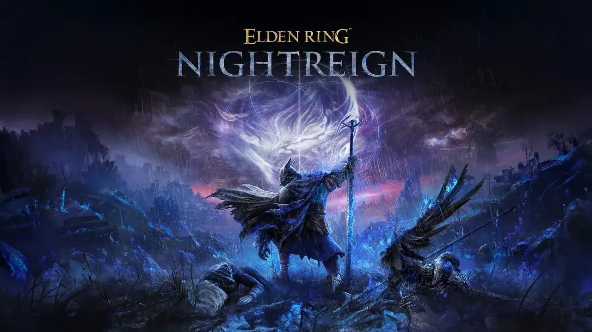
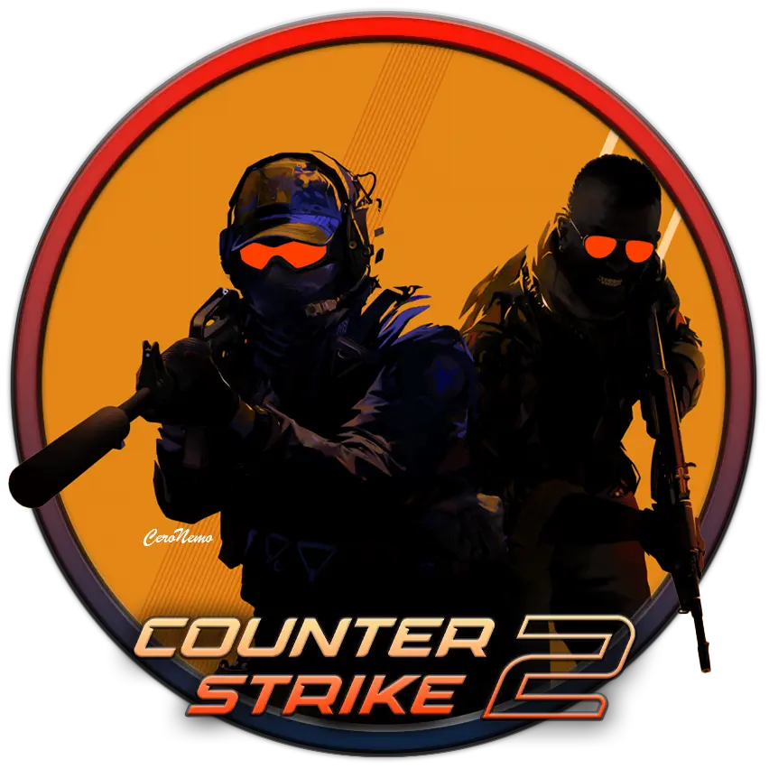
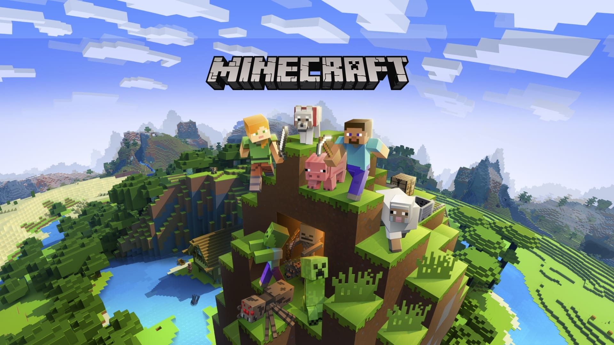

O mnie
Witaj w moim cyfrowym świecie! Nazywam się Eryk, ale w sieci znajdziesz mnie pod nickiem Szuriken55. Jestem pasjonatem nowoczesnych technologii, który każdą wolną chwilę poświęca na zgłębianie tajników świata IT oraz analizowanie mechanik w najnowszych produkcjach gamingowych. Moim celem jest połączenie pasji do tworzenia treści z profesjonalnym podejściem do programowania.
Moja przygoda z komputerami zaczęła się już dawno temu, ale to właśnie teraz czuję, że webdevelopment to ścieżka, którą chcę podążać. Stosuję tutaj techniki takie jak Flexbox oraz CSS Scroll Snap, aby stworzyć responsywną stronę internetową, która jest nie tylko estetyczna, ale i funkcjonalna. Nieustannie eksperymentuję z nowymi bibliotekami, aby moje projekty były zawsze na najwyższym poziomie.
Edukacja i Rozwój
Obecnie kształcę się w Zespole Szkół Technicznych w Jaśle (ZST Jasło), na kierunku informatycznym. To tutaj kładę fundamenty pod moją przyszłą karierę zawodową, ucząc się budowy sieci, administracji systemami oraz podstaw algorytmiki.
Poza zajęciami szkolnymi biorę udział w kursach online i śledzę najnowsze trendy w branży IT. Wierzę, że w zawodzie informatyka kluczowa jest samodyscyplina i ciągłe poszerzanie horyzontów, dlatego codziennie poświęcam czas na naukę nowych języków programowania i rozwiązywanie problemów logicznych.
Strefa Gamingu
Gaming to dla mnie coś więcej niż tylko rozrywka – to ogromna część mojego życia i fascynacja interaktywną narracją. Szczególną uwagę poświęcam tytułom z otwartym światem oraz e-sportowym zmaganiom, które wymagają refleksu i strategicznego myślenia.
Interesuje mnie nie tylko sama rozgrywka, ale również proces powstawania gier – od pierwszych szkiców koncepcyjnych po optymalizację kodu. Na moim blogu staram się dzielić spostrzeżeniami na temat balansu rozgrywki oraz nowatorskich rozwiązań, które wprowadzają deweloperzy w najnowszych hitach.
Świat IT i Hardware
Świat IT zmienia się niemal każdego dnia, a ja staram się być na bieżąco z każdą technologiczną nowinką. Fascynuje mnie zarówno warstwa sprzętowa (hardware), jak i nowoczesne rozwiązania software'owe, które ułatwiają nam codzienne życie.
Uwielbiam śledzić premiery nowych podzespołów komputerowych, analizować testy wydajności procesorów oraz kart graficznych. Wiedza o tym, jak dobrać odpowiednie komponenty, pozwala mi nie tylko budować wydajne maszyny, ale także lepiej rozumieć ograniczenia i możliwości współczesnego oprogramowania.
Moje ulubione gry




Moja Specyfikacja PC
Procesor
Intel Core i7-6700
Karta Graficzna
NVIDIA GeForce GTX 1660 SUPER 6GB
Pamięć RAM
16GB DDR4 3200MHz
Dysk SSD
GOODRAM SSD CX400 1TB SATA III
Główny Monitor
MSI G242L E14 (1920x1080 IPS 144Hz)
Zasilacz
Rebeltec TITAN 600W